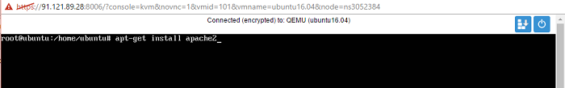
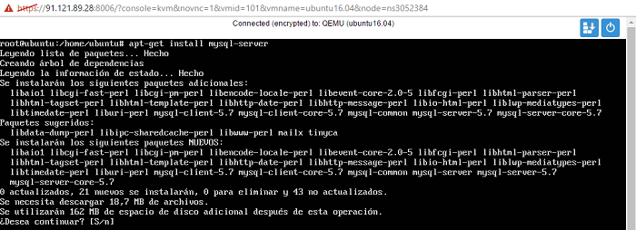
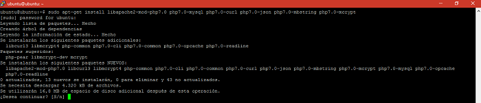

Para la instalación del servidor LAMP en la máquina de Ubuntu Server se deben seguir los siguientes pasos:
1. Inicialmente se inicia como súper usuario usando el comando “sudo su” y actualizamos los repositorios del sistema mediante el comando “apt-get update”.
2. El primer paso de la instalación del servidor LAMP es la instalación del Apache mediante el comando “apt-get install apache2”, quien cumple con la función del servidor web y nos permite la interpretación de las páginas y plataformas.

3. Le damos la autorización para que pueda continuar con la instalación.
4. A través del comando “systemctl status apache2” comprobamos que el servicio de apache este activo.
5. Para validar por completo la instalación de apache en la máquina, accedemos al navegador y digitamos la IP de nuestro servidor en la barra de navegación para este caso “149.202.3.61”. Si la instalación ha sido correcta debe aparecer el archivo de bienvenida de apache.
6. Mediante el comando “apt-get install mysql-server” instalamos el gestor de bases de datos MySQL.

7. En esta parte de la instalación de MySQL pedirá que se ingrese la contraseña del usuario root (Administrador) con la cual podrás brindar seguridad a tus bases de datos y la información contenida en ellas.
8. Ahora se confirma la contraseña con el fin de brindar una mayor seguridad y evitar errores en el ingreso de la misma.
9. Con el comando “mysql -uroot -p” accedemos a la consola de MySQL.
10. Estando en la consola de MySQL ejecutamos el comando “show databases”; y este nos mostrara todas las bases de datos creadas en el servidor, con lo cual terminamos de comprobar la correcta instalación de MySQL.
11. Una vez instalados el servidor web y el gestor de bases de datos procedemos a instalar el lenguaje de programación PHP versión 7 y lo realizamos mediante el comando “apt-get install php libapache2-mod-php7.0 php7.0-mysql php7.0-curl php7.0-json php7.0-mbstring php7.0-mcrypt” Aceptamos continuar, para que termine el proceso de instalación de manera correcta.

12. Con el siguiente comando “apt-cache search php7-*” Se instalan todos los módulos necesarios el correcto funcionamiento y compatibilidad de PHP7 con MySQL.
13. Ahora con el comando “apt-get install libapache2-mod-php7.0” Instalamos los módulos necesarios para el correcto funcionamiento y compatibilidad con PHP7 y Apache2.
14. Empezamos a comprobar la correcta instalación de PHP7 ejecutando el comando “php -v” con el fin de que nos muestre la versión que ha sido instalada.
15. Por ultimo para comprobar la correcta instalación de PHP nos vamos al navegador y digitamos la dirección IP de la maquina más “info.php” de la siguiente manera http://149.202.3.61/info.php y debe mostrarnos la siguiente imagen.
Nota:Si esto sucede hemos culminado de manera correcta la instalación de nuestro servidor LAMP en la máquina de Ubuntu Server 16.04.